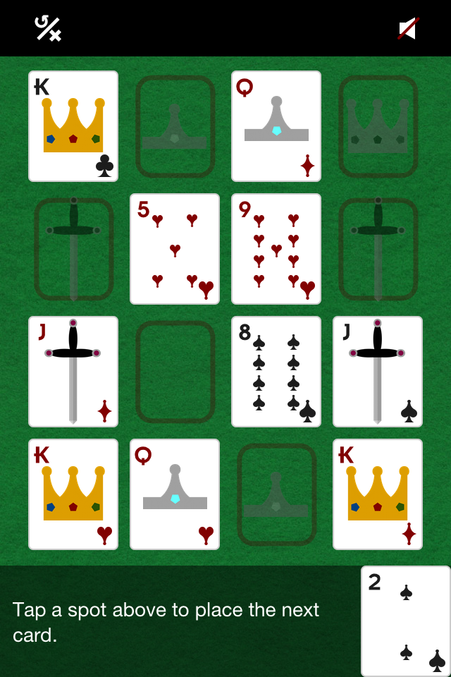
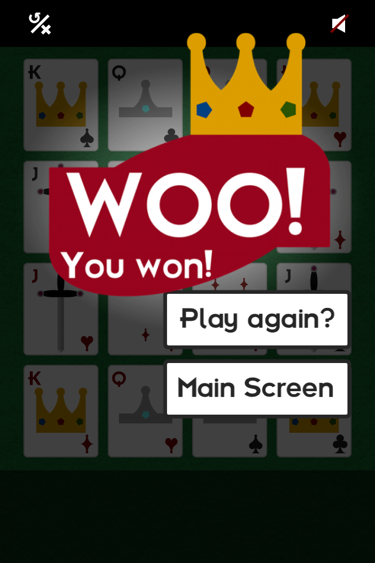
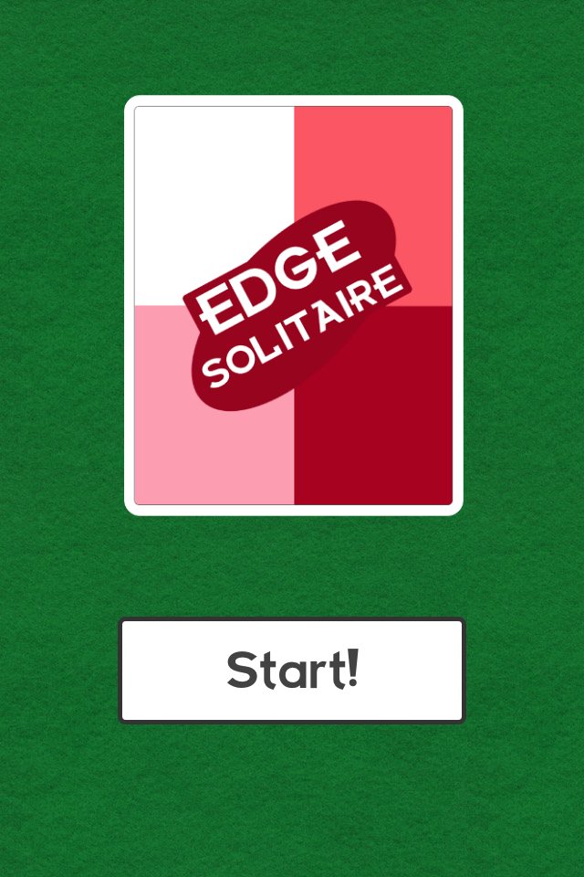

Edge Solitaire
Can you put the royals in their place? In Edge Solitaire, the goal is to place the
face cards in their assigned spots around the edge of the game board. Look out! If
a face card comes up but all of its spots are already filled, you lose! Each time
you completely fill the board, you have a chance to clear spots by selecting cards
whose values sum up to ten. Good luck!

Face cards can only go on their designated slots
around the edge. All other cards can be placed anywhere.

Winning isn't as easy at it seems. Can you corral the royals
into their spots around the edge?

Start the game, but make sure you have plenty of time! Edge
Solitaire may be slightly addictive!